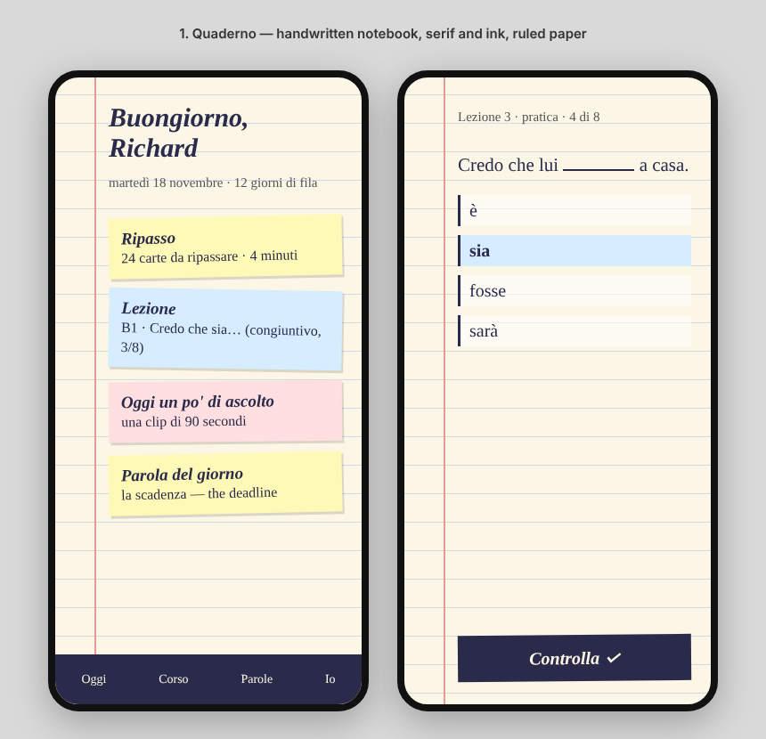
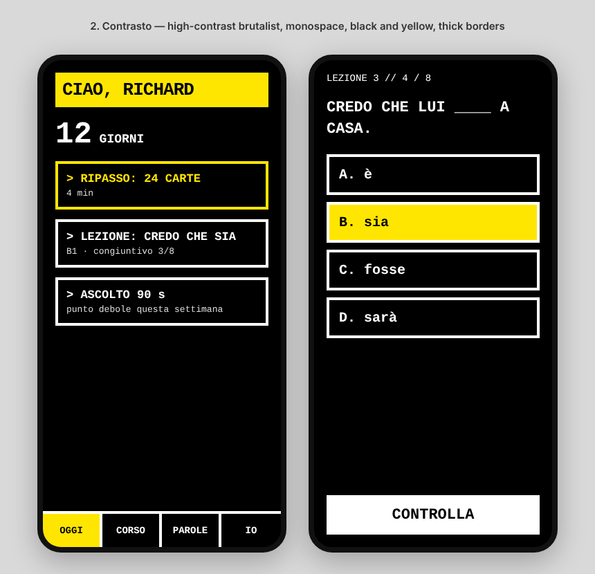
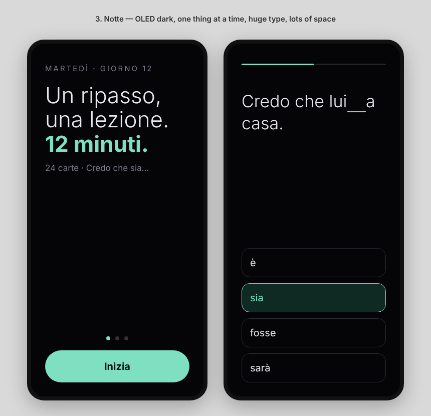
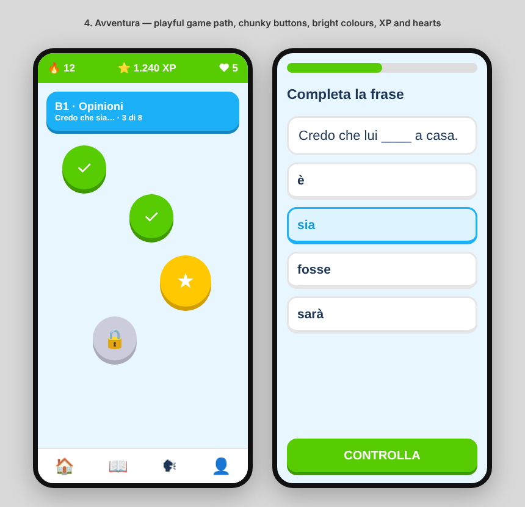
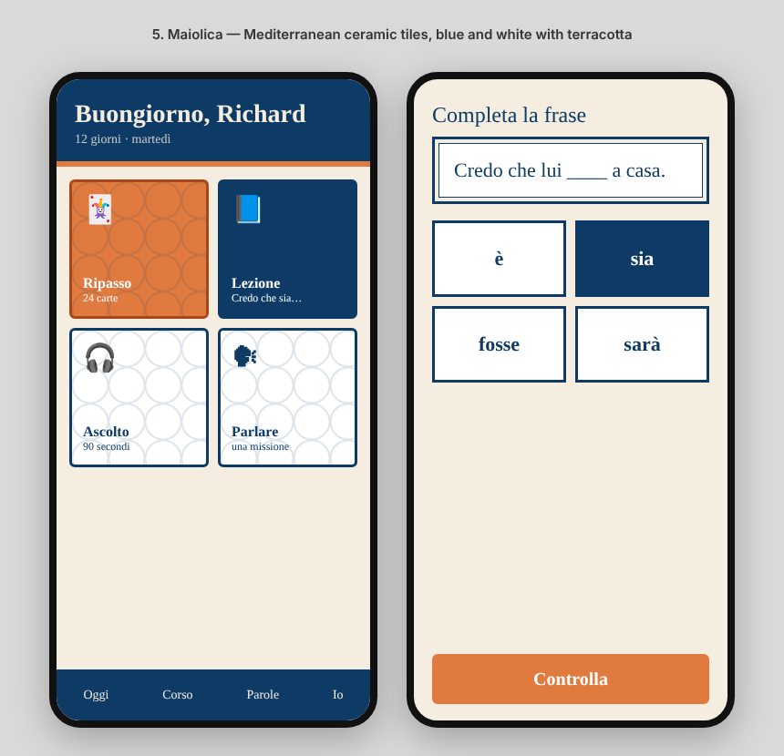
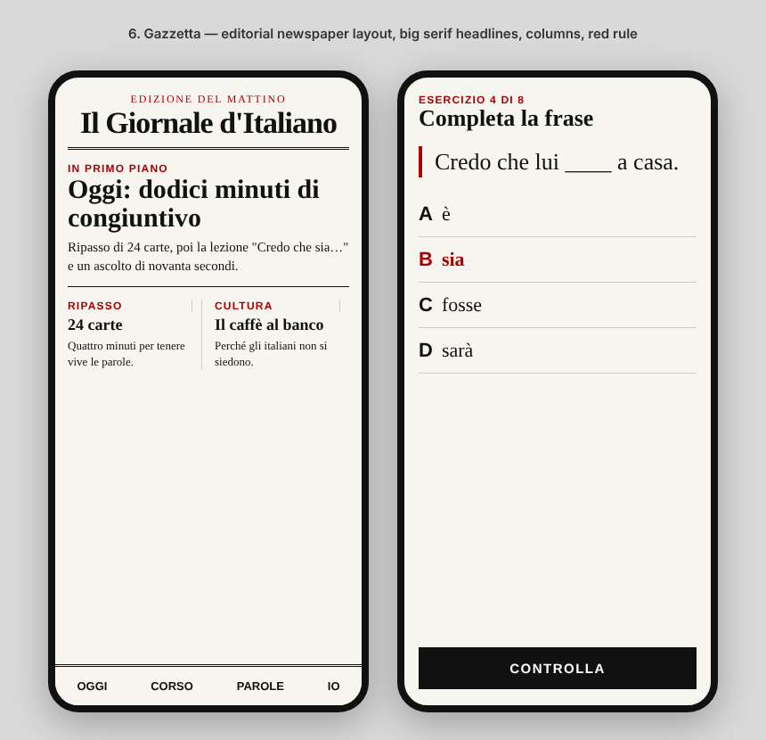
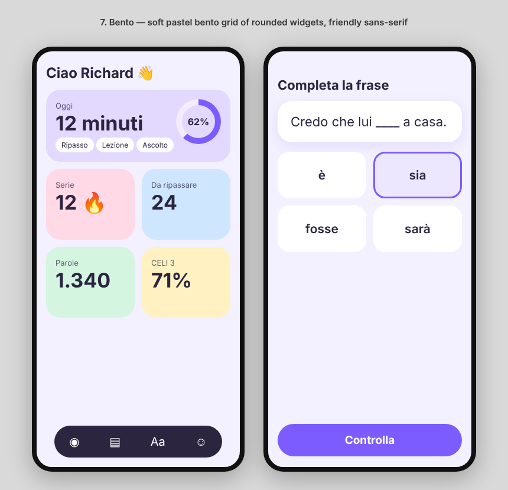
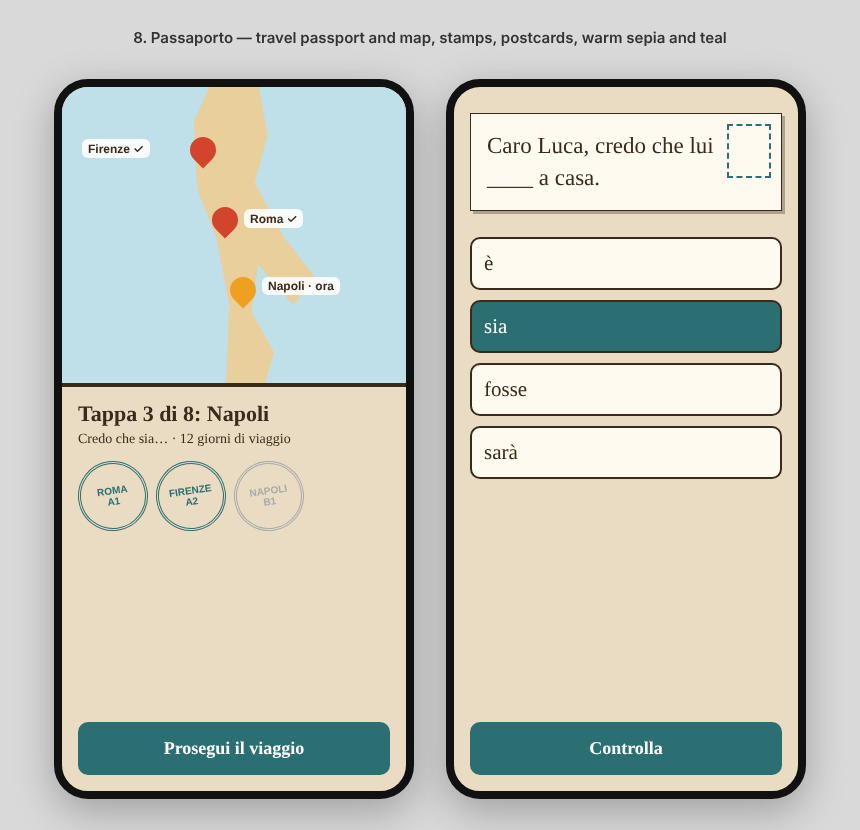
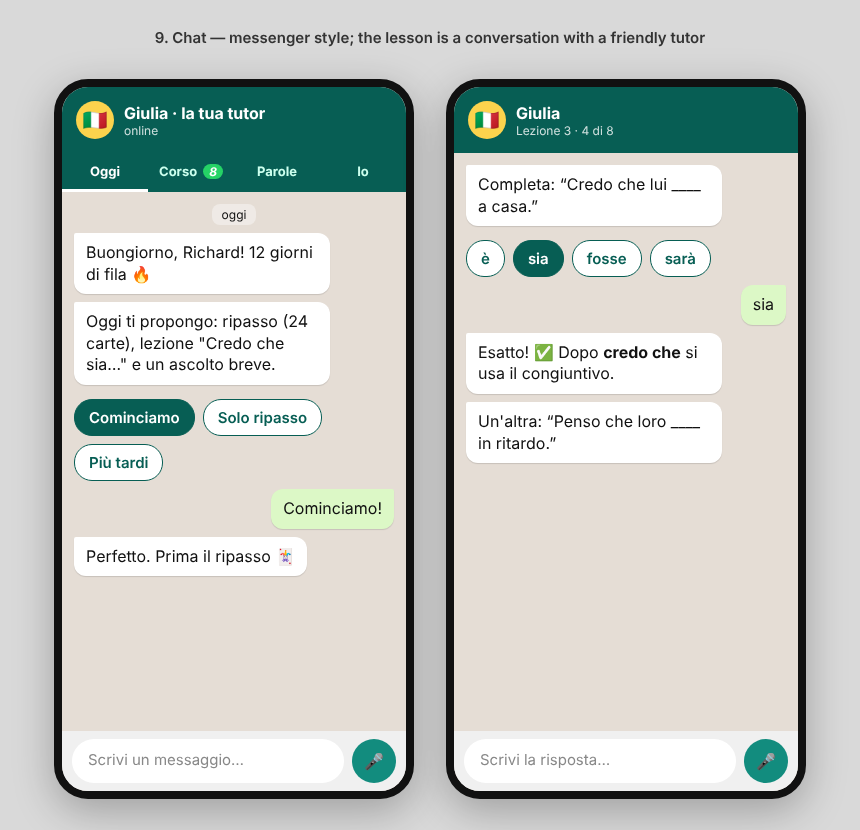
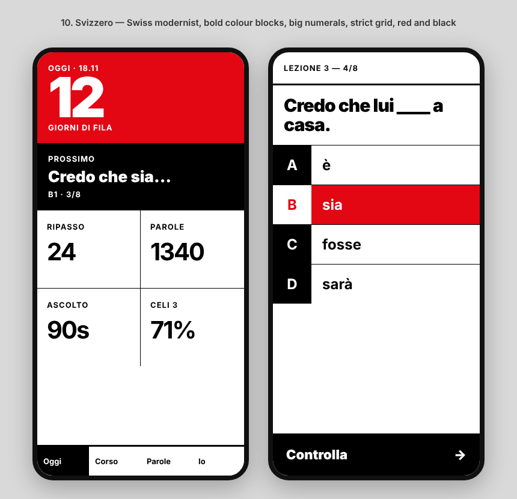

Each opens a page showing the Home screen and a lesson exercise. Pick one (or two to combine). Same content in all ten, so only the design differs.

1. Quadernohandwritten notebook, serif and ink, ruled paper
2. Contrastohigh-contrast brutalist, monospace, black and yellow, thick borders
3. NotteOLED dark, one thing at a time, huge type, lots of space
4. Avventuraplayful game path, chunky buttons, bright colours, XP and hearts
5. MaiolicaMediterranean ceramic tiles, blue and white with terracotta
6. Gazzettaeditorial newspaper layout, big serif headlines, columns, red rule
7. Bentosoft pastel bento grid of rounded widgets, friendly sans-serif
8. Passaportotravel passport and map, stamps, postcards, warm sepia and teal
9. Chatmessenger style; the lesson is a conversation with a friendly tutor
10. SvizzeroSwiss modernist, bold colour blocks, big numerals, strict grid, red and black